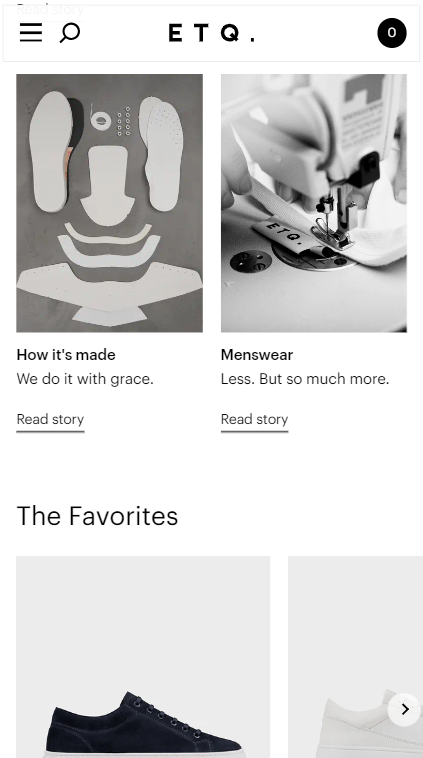

WHITE SPACE & CLEAN DESIGN
Hyer | flyhyer.com
Hyer's home screen is an excellent example on how white space enhances design. They played it to their advantage making the empty space an intentional part of their design. The lack of items on the screen also assists the hierarchy of the page.
PROXIMITY
ETQ | etq-amsterdam.com
For commercial sites such as ETQ, proximity incredibly important in clearly defining the characteristics of the products being sold. It is also useful in bloglike posts such as the example shown in the screenshot here. Without proper proximity, users would not understand which information pertains to which product.
VISUAL HIERARCHY
Nike | nike.com
Nike uses typography and contrast to create a distinct visual hierarchy. The heading immediately catches your attention with a larger bold fon and all caps. From there the eyes follow the natural flow down the screen.